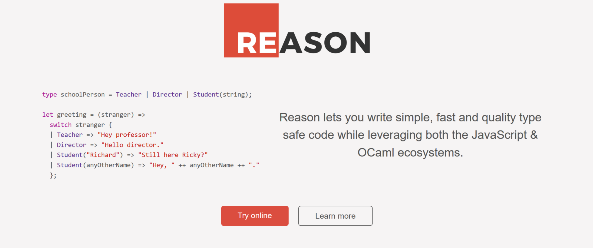

Table of Contents
1 Reactive Conf 2017 Highlights
1.1 Go
Game with David Nolen
1.2 Talks
1.2.1 David Nolen on Datomic and Simplicity
When considered next to testing and reasoning, simplicity is more important than either. Given a stark choice between investment in testing and investment in simplicity, the latter may often be the better choice because it will facilitate all future attempts to understand the system attempts of any kind.
- Datomic
Datomic is a distributed database and implementation of Datalog on Clojure. Datalog is a declarative logic programming language that syntactically is a subset of Prolog https://en.wikipedia.org/wiki/Datomic
1.2.2 RON: Replicated Object Notation - Victor Grishchenko
Argument against using JSON everywhere because:
- optimized for human readability not for computers
- is bloated
- weak (missin uuid [universally unique identifier], versioning..)
- Better ?
Swarm Replicated Object Notation is a distributed data serialization format. Implicitly, formats like XML or JSON assume a lump of state being delivered from a server to a client – once and in one piece. RON aims to synchronize replicas by delivering a stream of changes – continuously and incrementally. With RON, even an object's state is seen as a batch of compacted changes, with more changes coming.
1.2.3 Reason: JavaScript-flavored OCaml - Jared Forsyth

Caml (originally an acronym for Categorical abstract machine language) is a multi-paradigm, general-purpose programming language which is a dialect of the ML programming language family. Caml was developed in France at INRIA and EN.S
OCaml (Objective Caml) - implementation of Caml
Reason - an alternate syntax (interface) for OCaml that uses Bucklescript compiler backend to output JS.
BuckleScript - A backend for the OCaml compiler which emits JavaScript.
. . .
JavaScript
- Variant data type
type account = | None | Instagram(string) | Facebook(string, int); let myAccount = Facebook("Josh", 26); let friendAccount = Instagram("Jenny"); let greeting = switch myAccount { | None => "Hi!" | Facebook(name, age) => "Hi " ++ name ++ ", you're " ++ string_of_int(age) ++ "-year-old." | Instagram(name) => "Hello " ++ name ++ "!" }; - undefined method `id' for nil:NilClass
type option('a) = None | Some('a);This is the convention used to simulate a "nullable" (aka undefined or null) value in other languages. Thanks to this convenience type definition, Reason can default every value to be non-nullable. An int will always be an int, never "int or null or undefined". If you do want to express a "nullable int", you'd use option(int), whose possible values are None or Some(int). switch forces you to handle both cases; therefore, a pure Reason program doesn't have null errors.
1.2.4 Secrets of the Glimmer VM - Tom Dale
Glimmer is a flexible, low-level rendering pipeline for building a "live" DOM from Handlebars templates that can subsequently be updated cheaply when data changes. Extracted from Ember as indepedent project.

Build in TypeScript, compiling to bytecode.
The Glimmer VM: Boots Fast and Stays Fast
http://yehudakatz.com/2017/04/05/the-glimmer-vm-boots-fast-and-stays-fast/